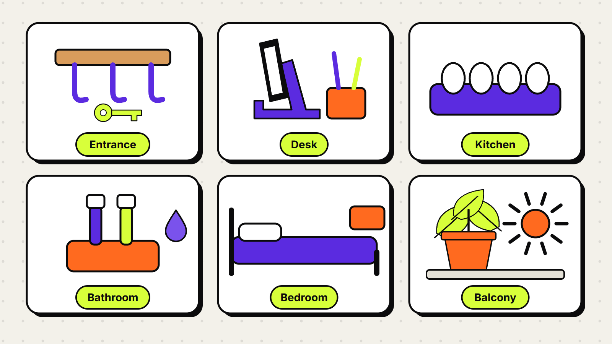
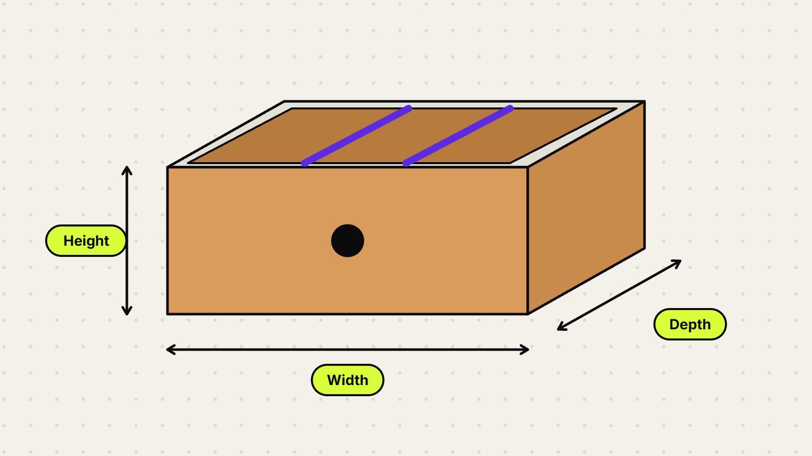

The best printed objects are not the flashiest. They are the small things that solve an everyday annoyance: a drawer that never stays tidy, a cable that slips behind the desk, a missing foot on a stool. Here are ten useful ideas, with what to measure and which material suits each.

Dividers sized to your drawer keep small items apart. Measure the inner width, depth, and height. Slot-together pieces can be adjusted later.
For keys, masks, or small bags. Use thick walls, screws suited to your wall, and print so the load runs along the layers. Keep weights modest.
Small clips along a desk edge stop cables sliding to the floor. Measure the cable diameter.
Choose the angle you actually use, and leave a gap for the charging cable.
Labels identify herbs, and feet lift pots so water drains. Choose ASA for sunny spots.
Measure the leg inside and outside. A snug cap protects floors.
A drawer knob or appliance dial can often be remade. Avoid parts near flames or high heat, and anything that protects against electricity or gas.
Holders for brushes or small bottles should drain freely. PETG copes with damp better than PLA.
A wall pocket or tray gives often-lost objects a home.
Bag clips that do not touch food are sensible. Printed scoops or containers that touch food are not recommended. Read why printed pieces are not food-safe.
| Item | Good material | Key measurement |
|---|---|---|
| Drawer dividers | PLA | Drawer inner size |
| Hooks | PLA+ or PETG | Weight and wall type |
| Cable clips | PETG | Cable diameter |
| Phone stand | PLA | Phone width with case |
| Plant items | ASA outdoors | Pot size |
| Bathroom holders | PETG | Space and drainage |

If a ready-made piece fits, it is usually the quickest answer. Browse the desk range and the decor range. If your space is unusual, a custom size is where printing shines.
Tip: Keep a note on your phone of small annoyances for a week. By Sunday you will know which one to solve first.
Choose one idea that affects you daily, such as the cable that always falls or the drawer you avoid opening. Order or print a single piece and live with it for a week. Notice whether it is the right height, whether your hand reaches it comfortably, and whether it gets in the way of cleaning. Those observations shape the next version far better than a picture online. Once a design works, matching pieces for other drawers, shelves, or rooms become straightforward, and the home starts to look planned rather than patched.
Share the dimensions with family members too. Someone else may notice that the hook sits too high for them, or that a holder would work better on the other side of the door.
It depends on thickness, orientation, material, and the wall fixing. Test a new hook close to the floor with the real item before relying on it, and keep loads modest.
No. Heat and water jets can warp PLA and loosen glued joints. Wipe or wash by hand with lukewarm water.
Matt mid-tones and darker shades show scratches and dust less than glossy pale ones. For items that get dirty, choose a colour that matches the surroundings.
Not someone else's design without permission. Describe the problem you want solved, and an original piece can be designed around your own space.
Cable clips. They need one measurement, use little material, and show quickly whether the size and shape suit your table.
Choose holders that lift off their fixings, or that leave a gap underneath. A soft brush reaches most grooves, and a damp cloth deals with smooth faces.
After a new piece has been in use for a week, look it over. Is anything bending, loosening, or collecting water? Does it get in the way of cleaning or catch on clothing? Small changes to thickness, angle, or position usually solve these problems, and it is much better to adjust one item before ordering a set of six.
Send measurements and photos through the quote form. If you are measuring a broken piece, follow our measuring guide first.